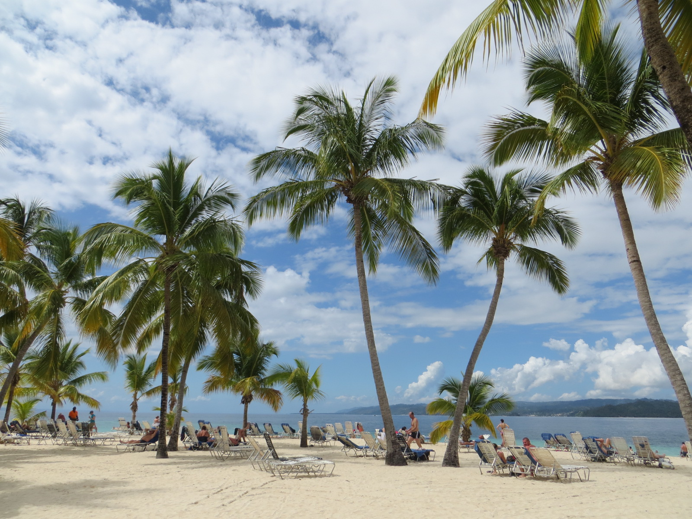

The Dominican Republic is a Caribbean nation that shares the island of Hispaniola with Haiti to the west.
It's known for its beaches, resorts and golfing. Its terrain comprises rainforest, savannah and highlands,
including Pico Duarte, the Caribbean’s tallest mountain. Capital city Santo Domingo has Spanish landmarks
like the Gothic Catedral Primada de America dating back 5 centuries in its Zona Colonial district.
Dominican
Republic breaks record in tourist arrivals
The Dominican Republic remains in vogue for tourists, even breaking its historical records regarding foreign visitor
arrivals. This increase in the flow of travelers in the country is also reflected in more excellent air
connectivity, with new projects of local and international airlines, making the DR now linked to major emerging
destinations.
Cruises
give great boost to tourism in Puerto Plata
Even though the tourism sector is in the so-called "low season," cruise ships continue to arrive in Puerto Plata
weekly. The vessels arrive at the Amber Cove and Taíno Bay terminals in the bays of Maimón and Puerto Plata, where
thousands of foreign visitors set foot on Dominican soil.
How much does a trip to Dominican Republic cost?
Price
Ticket from JFK
$1100
Hotel for 2 per night
$150
Food per person per day
$80
Attractions and Activities per person
$200
Total Cost per day per person
430

Beach in Dominican Republic
More than 6 million tourists visit the Dominican Republic, making it the most popular tourist destination in
the Caribbean and putting it in the top 5 overall in the Americas. The industry accounts for 11.6% of the
nation's GDP and is a particularly important source of revenue in coastal areas of the country.